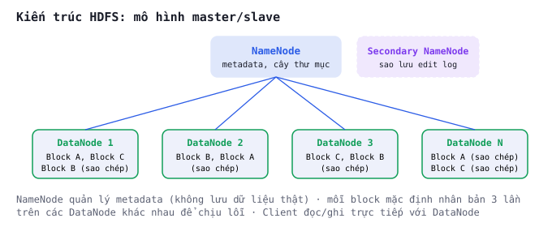
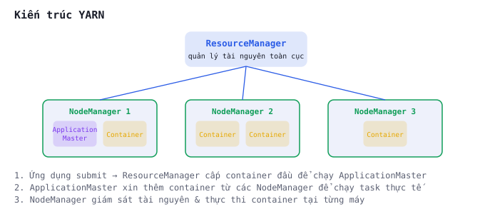

Slide thuyết trình môn Lưu trữ & xử lý dữ liệu lớn (giảng viên Tạ Duy Hoàng) — nhóm Trương Tuấn Nghĩa (20251196M), Nguyễn Vũ Việt Hoàng (20252091M), Nguyễn Thế Hoàng (20251228M). Nội dung bám sát 100% Chương 2 giáo trình chính thức của môn học (IT4931_lecture_notes.pdf, tr.23–36), không bổ sung nội dung ngoài phạm vi sách.
Chương 2 — Lưu trữ và Xử lý Dữ liệu Lớn (Trần Văn Đặng, Nguyễn Hữu Đức, Nguyễn Bình Minh, Trần Việt Trung, ĐH Bách Khoa Hà Nội)
Nhóm 1 · Trương Tuấn Nghĩa (20251196M) · Nguyễn Vũ Việt Hoàng (20252091M) · Nguyễn Thế Hoàng (20251228M)
Giảng viên: Tạ Duy Hoàng · Bài giảng chuyên đề · 48 slide
| Nội dung | Sau phần trình bày, lớp có thể |
|---|---|
| Tổng quan Hadoop | Giải thích vì sao Hadoop ra đời, kiến trúc scale-out |
| HDFS | Mô tả kiến trúc NameNode/DataNode, cơ chế nhân bản |
| MapReduce & YARN | Phân biệt vai trò 2 thành phần, kiến trúc YARN |
| Hive, Pig | So sánh 2 cách trừu tượng hoá MapReduce |
| HBase, Sqoop | Nêu use-case NoSQL thời gian thực & ETL với RDBMS |
| Kafka, Oozie, ZooKeeper | Giải thích vai trò streaming, điều phối workflow, coordination |
Nguồn duy nhất: Chương 2 giáo trình môn học, tr.23–36.
Nền tảng mã nguồn mở được thiết kế để lưu trữ và xử lý khối lượng dữ liệu lớn trên cụm máy tính — cung cấp khả năng lưu trữ scalable (mở rộng được) và reliable (tin cậy), hỗ trợ xử lý song song trên phần cứng thông dụng (commodity hardware).
Hadoop phát triển dựa trên nghiên cứu của Google về hệ thống phân tán:
| Bài báo gốc | Trở thành trong Hadoop | |
|---|---|---|
| Google File System (GFS) | Hệ thống tập tin phân tán | HDFS |
| MapReduce (2004) | Mô hình lập trình song song | Hadoop MapReduce |
Mục tiêu chính: giải quyết bài toán lưu trữ và xử lý dữ liệu lớn trong môi trường phân tán, trên phần cứng rẻ tiền thay vì thiết bị chuyên dụng đắt tiền.
| Thành phần | Vai trò |
|---|---|
| HDFS (Hadoop Distributed File System) | Lưu trữ dữ liệu dung lượng lớn trên cụm máy tính |
| Hadoop MapReduce | Mô hình lập trình phân tán xử lý dữ liệu lớn kiểu batch |
| Hadoop YARN (Yet Another Resource Negotiator) | Quản lý tài nguyên & lập lịch tác vụ, cho nhiều ứng dụng chạy đồng thời |
| Hadoop Common | Bộ thư viện & tiện ích chung hỗ trợ các module khác |
| Tiêu chí | Scale-up (truyền thống) | Scale-out (Hadoop) |
|---|---|---|
| Cách mở rộng | Nâng cấp 1 máy chủ (thêm CPU/RAM đắt tiền) | Thêm nhiều máy chủ rẻ tiền vào cụm |
| Giới hạn mở rộng | Bị chặn bởi phần cứng cao cấp nhất hiện có | Mở rộng tới hàng chục nghìn node |
| Xử lý lỗi | 1 máy hỏng = toàn hệ thống dừng | Lỗi node là bình thường, tự động nhân bản & chuyển tác vụ |
| Chi phí | Tăng phi tuyến khi nâng cấp máy đơn | Tăng gần tuyến tính khi thêm node thông dụng |
HDFS tối ưu cho các tệp kích thước lớn (hàng trăm MB đến TB), mô hình truy cập write-once, read-many (ghi một lần, đọc nhiều lần).
Chạy trên phần cứng thông dụng (không cần thiết bị lưu trữ chuyên dụng đắt tiền) — chấp nhận lỗi phần cứng xảy ra thường xuyên, bù lại bằng cơ chế chịu lỗi ở cấp phần mềm.

Mỗi tệp trong HDFS được chia thành nhiều block (khối dữ liệu) thay vì lưu nguyên khối như hệ file thông thường.
Mỗi block được replicate (nhân bản) thành nhiều bản sao, phân phối trên các DataNode khác nhau trong cụm.
Ví dụ số liệu tự tính để minh hoạ khái niệm — không trích từ sách, chỉ dùng đúng các thông số sách đã nêu (block 128MB, nhân bản 3 lần).
| Bước tính | Giá trị |
|---|---|
| Kích thước tệp cần lưu | 1 TB = 1 048 576 MB |
| Kích thước block | 128 MB |
| Số block cần (1 048 576 / 128) | = 8 192 block |
| Hệ số nhân bản | × 3 |
| Dung lượng vật lý thực tế cần trên cụm | = 3 TB (gấp 3 lần dữ liệu gốc) |
NameNode là thành phần trung tâm duy nhất giữ toàn bộ metadata — nếu NameNode gặp sự cố mà không có cơ chế dự phòng, cả hệ thống có nguy cơ mất khả năng xác định dữ liệu nằm ở đâu (dù dữ liệu thật vẫn còn nguyên trên DataNode).
| Hạn chế | Lý do |
|---|---|
| Độ trễ truy xuất thấp (real-time) | Tối ưu cho thông lượng tuần tự, không phải truy vấn ngẫu nhiên |
| Số lượng lớn tệp nhỏ | Metadata mọi tệp giữ trong bộ nhớ NameNode — giới hạn RAM |
| Sửa đổi nội dung tuỳ ý | Chỉ hỗ trợ append ở cuối tệp, không ghi đè giữa file |
Đề xuất bởi Google (2004) — framework đơn giản cho xử lý dữ liệu lớn song song, dựa trên 2 hàm do người lập trình định nghĩa:
| Giai đoạn | Việc của lập trình viên | Việc của framework |
|---|---|---|
| Map (ánh xạ) | Viết hàm Map | Phân chia dữ liệu, phân phối tác vụ lên cụm |
| Reduce (giảm thiểu) | Viết hàm Reduce | Thu gộp kết quả trung gian, xử lý lỗi tự động |
| Phiên bản | Vai trò MapReduce |
|---|---|
| Hadoop 1.x | Engine xử lý dữ liệu chính, cung cấp khả năng xử lý batch cho mọi bài toán |
| Hadoop 2.x (có YARN) | Trở thành một trong nhiều framework chạy trên cụm, cạnh tranh tài nguyên với Spark, Flink... |
Tối ưu hoá tận dụng hạ tầng: Data Locality (đặt tác vụ gần dữ liệu), Minimal Data Exchange, Fault Tolerance tự động — nhờ đó chạy hiệu quả trên hàng nghìn node, xử lý hàng petabyte theo lô.
MapReduce không hoạt động đơn độc — nó là engine thực thi phía sau của nhiều công cụ khác:
| Công cụ | Dịch sang MapReduce như thế nào |
|---|---|
| HDFS | MapReduce đọc/ghi dữ liệu trực tiếp qua HDFS |
| YARN | Quản lý tài nguyên cho các job MapReduce chạy trên cụm |
| Hive | Dịch câu lệnh HiveQL thành job MapReduce |
| Pig | Dịch kịch bản Pig Latin thành job MapReduce |
| Sqoop | Dùng MapReduce (chỉ Map task) để import/export dữ liệu |
Trong Hadoop 1.x, MapReduce vừa xử lý dữ liệu vừa quản lý tài nguyên & lập lịch trên cụm — dẫn đến hạn chế về hiệu năng và tính linh hoạt.

| Lợi ích | Giải thích |
|---|---|
| Đa dạng hoá workload | Nhiều loại ứng dụng chạy đồng thời (MapReduce, Spark, Flink, Tez...) |
| Tăng tính linh hoạt | Biến cụm Hadoop thành nền tảng đa năng, không chỉ dành cho MapReduce |
| Mở rộng & đa người dùng | Cấu hình chính sách lập lịch: FIFO, Fair Scheduler, Capacity Scheduler |
| Quản lý tài nguyên hiệu quả | Phân bổ công bằng & hiệu quả giữa các ứng dụng khác nhau |
Phát triển tại Facebook — cho phép truy vấn dữ liệu lớn bằng ngôn ngữ gần SQL (HiveQL): SELECT, JOIN, GROUP BY... tự động dịch thành job MapReduce (hoặc Tez, Spark) để thực thi.
| Đặc trưng | Ý nghĩa |
|---|---|
| Phù hợp phân tích dữ liệu lớn | Tối ưu cho truy vấn batch trên TB dữ liệu |
| Thân thiện người dùng | Nhà phân tích dùng SQL quen thuộc, không cần viết Java MapReduce |
| Schema on read | Dữ liệu lưu thô trên HDFS, schema chỉ định khi đọc — linh hoạt với dữ liệu đa dạng |
Phát triển tại Yahoo! — thay vì SQL, Pig cung cấp ngôn ngữ kịch bản Pig Latin để biểu diễn luồng xử lý (đọc, lọc, biến đổi, gộp nhóm, join, sắp xếp...) theo dạng data flow.
| Đặc điểm | Giải thích |
|---|---|
| Độ dễ lập trình | Câu lệnh tuần tự, Pig tự song song hoá & tối ưu |
| Tối ưu hoá | Biết trước toàn bộ luồng → kết hợp bước, đẩy bộ lọc lên sớm |
| Mở rộng (UDF) | Tự định nghĩa hàm bằng Java/Python chèn vào kịch bản |
Pig Engine biên dịch kịch bản thành chuỗi job MapReduce — đặc biệt hiệu quả cho transform & join dữ liệu phức tạp.
| Tiêu chí | Hive | Pig |
|---|---|---|
| Ngôn ngữ | HiveQL (giống SQL) | Pig Latin (kịch bản) |
| Đối tượng dùng | Nhà phân tích quen SQL | Kỹ sư dữ liệu, ETL phức tạp |
| Mô hình dữ liệu | Bảng (schema-on-read) | Data flow tuần tự |
| Engine thực thi | Dịch sang MapReduce/Tez/Spark | Dịch sang MapReduce |
| Độ trễ | Vài phút (batch) | Vài phút (batch) |
NoSQL phân tán xây trên Hadoop, thiết kế theo mô hình Bigtable (Google) — lưu bảng hàng tỷ dòng, hàng triệu cột, hỗ trợ truy cập ngẫu nhiên độ trễ thấp.
| Đặc trưng | Giải thích |
|---|---|
| Mô hình wide-column | Cột nhóm thành column family; mỗi ô có row key, tên cột, giá trị, timestamp |
| Mở rộng cực lớn | Scale-out hàng trăm node, bảng hàng chục petabyte, tự động chia region |
| Đọc/ghi thời gian thực | Hàng trăm nghìn INSERT/giây nhờ LSM-tree + commit log |
Phù hợp cho: truy cập ngẫu nhiên theo khoá, khối lượng lớn (vd tra cứu/cập nhật theo userID) — hơn là phân tích ad-hoc.
Ví dụ thực tế: Facebook Messaging từng dùng HBase lưu tin nhắn cho hàng trăm triệu người dùng, khai thác khả năng mở rộng linh hoạt.
| Nhu cầu | Chọn |
|---|---|
| Phân tích tổng hợp trên tập dữ liệu lớn (batch) | HDFS + MapReduce/Hive |
| Đọc/ghi ngẫu nhiên theo khoá, độ trễ thấp, gần thời gian thực | HBase |
| Truy vấn kiểu SQL, JOIN, GROUP BY phức tạp | Hive (không phải HBase) |
| Tra cứu/cập nhật theo userID với tốc độ cao | HBase (không phải Hive) |
Tên ghép từ SQL + Hadoop — công cụ nhập/xuất dữ liệu hàng loạt giữa Hadoop và RDBMS (MySQL, PostgreSQL, Oracle...).
| Chiều | Cơ chế |
|---|---|
| Import (RDBMS → HDFS) | Kết nối JDBC, khởi chạy job MapReduce chỉ gồm Map task — mỗi task nhập 1 phần bảng (theo WHERE/primary key) |
| Export (HDFS → RDBMS) | Chia dữ liệu HDFS thành splits, mỗi Map task đẩy 1 phần vào CSDL qua batch INSERT |
Phát triển tại LinkedIn — nền tảng publish-subscribe phân tán: producer gửi thông điệp vào topic, consumer đăng ký nhận từ topic đó.
| Đặc điểm | Giải thích |
|---|---|
| Thông lượng & độ bền cao | Hàng triệu thông điệp/giây, ghi commit log tuần tự, nhân bản giữa broker |
| Partition | Mỗi topic chia nhiều partition — tăng song song; Kafka đảm bảo thứ tự trong từng partition |
| Multi-subscriber | Nhiều consumer group độc lập đọc cùng dữ liệu mà không ảnh hưởng nhau |
Minh hoạ dựa trên ví dụ sách nêu (thu thập log sự kiện người dùng vào topic "website_events") — diễn giải thêm để dễ hình dung, không phải trích nguyên văn.
website_eventsHệ thống quản lý & lập lịch luồng công việc (workflow scheduler) cho Hadoop — định nghĩa chuỗi job (MapReduce → Hive → shell script...) và quản lý thực thi tuần tự/song song.
Ví dụ: chạy job MapReduce A → nếu thành công chạy job Hive B, nếu thất bại gửi email rồi kết thúc.
Coordinator: lên lịch lặp lại workflow theo thời gian (mỗi giờ/ngày) hoặc khi dữ liệu mới đến HDFS.
| Chức năng | Mô tả ngắn |
|---|---|
| Quản lý cấu hình | Lưu & phân phát thông tin cấu hình cho các node |
| Đặt tên (naming) | Không gian tên chung để dịch vụ đăng ký & tìm nhau |
| Đồng bộ hoá phân tán | Cơ chế khoá, hàng rào (barrier) tránh xung đột |
| Dịch vụ nhóm | Theo dõi thành viên trong 1 nhóm node (vd RegionServer) |
| Bầu chọn leader | Đảm bảo đúng 1 node làm leader tại 1 thời điểm (ephemeral znode) |
ZooKeeper dùng thuật toán ZAB (ZooKeeper Atomic Broadcast — thuộc họ thuật toán Paxos) để đảm bảo tất cả server ZooKeeper (chạy thành cụm nhỏ) duy trì cùng một trạng thái.
Nhờ đó, các node trong hệ phân tán không cần liên lạc peer-to-peer phức tạp — chỉ cần dựa vào ZooKeeper như một "trọng tài chung" tin cậy.
| Thành phần | ZooKeeper dùng để |
|---|---|
| HDFS High Availability | Giám sát NameNode & kích hoạt failover |
| YARN | Lưu thông tin ResourceManager chủ |
| HBase | Theo dõi RegionServer & điều phối Master |
| Kafka (bản cũ) | Quản lý thông tin broker, chủ đề, phân vùng |
| Tầng | Thành phần | Vai trò |
|---|---|---|
| Thu thập | Kafka | Streaming sự kiện thời gian thực |
| Lưu trữ | HDFS, HBase | Tệp phân tán & NoSQL thời gian thực |
| Tính toán batch | MapReduce | Mô hình Map + Reduce song song |
| Phân tích | Hive, Pig | SQL-like & kịch bản data flow |
| Quản trị luồng | Oozie | Lập lịch workflow dạng DAG |
| Vận hành | ZooKeeper | Điều phối, đồng bộ, bầu leader |
| Điều phối tài nguyên | YARN | Quản lý tài nguyên đa ứng dụng |
| Tích hợp RDBMS | Sqoop | Import/export với CSDL quan hệ |
Hai nền tảng chính HDFS (lưu trữ tin cậy, mở rộng trên phần cứng rẻ) và MapReduce (lập trình song song đơn giản) tạo lõi Hadoop. YARN tách quản lý tài nguyên, biến cụm thành hạ tầng đa nhiệm.
Các dự án mở rộng đáp ứng nhu cầu đa dạng: Hive (SQL-like), Pig (ETL kịch bản), HBase (NoSQL thời gian thực), Sqoop (tích hợp RDBMS), Kafka (streaming), Oozie (workflow), ZooKeeper (điều phối).
| Thuật ngữ | Giải nghĩa ngắn |
|---|---|
| NameNode / DataNode | Node quản lý metadata / node lưu block dữ liệu thật trong HDFS |
| Block & Replication | Đơn vị chia nhỏ tệp (64–128MB) & cơ chế nhân bản (mặc định 3 lần) |
| ResourceManager / NodeManager | Quản lý tài nguyên toàn cục / tác nhân quản lý tài nguyên từng node (YARN) |
| ApplicationMaster | Tiến trình lập lịch riêng cho mỗi ứng dụng chạy trên YARN |
| HiveQL / Pig Latin | Ngôn ngữ truy vấn giống SQL (Hive) / ngôn ngữ kịch bản data flow (Pig) |
| Column family | Nhóm các cột trong bảng wide-column của HBase |
| Topic / Partition | Chủ đề thông điệp / đơn vị chia nhỏ 1 topic trong Kafka để song song hoá |
| DAG | Đồ thị có hướng không chu trình — mô hình workflow của Oozie |
| Znode | Đơn vị dữ liệu trong cây thư mục phân tán của ZooKeeper |
Dùng để thảo luận tại lớp — không có đáp số cố định, trả lời dựa trên nội dung Chương 2.
Nguồn duy nhất của toàn bộ nội dung trình bày:
| Mục | Chi tiết |
|---|---|
| Giáo trình | Lưu trữ và Xử lý Dữ liệu Lớn — Trần Văn Đặng, Nguyễn Hữu Đức, Nguyễn Bình Minh, Trần Việt Trung |
| Đơn vị | Trường Công nghệ Thông tin & Truyền thông, Đại học Bách Khoa Hà Nội (2024) |
| Chương sử dụng | Chương 2 — Hệ sinh thái Hadoop, tr. 23–36 |
| Phân công | Thầy Tạ Duy Hoàng — Nhóm 1 phụ trách Chương 2 (thông báo 05/10, trình bày từ tuần 12/10) |
Trương Tuấn Nghĩa (20251196M) · Nguyễn Vũ Việt Hoàng (20252091M) · Nguyễn Thế Hoàng (20251228M)
Môn Lưu trữ & xử lý dữ liệu lớn — Giảng viên Tạ Duy Hoàng
Hệ thống tự học mở, xây từ giáo trình Sketching Algorithms (Jelani Nelson) và lộ trình 14 buổi tự học môn Lưu trữ & xử lý dữ liệu lớn. Toàn bộ nội dung, bài tập, quiz chạy tĩnh, không cần server.